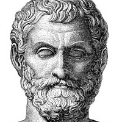

タレス
彼が「最初の哲学者」に位置付けられるのは、アリストテレス『形而上学』でそう位置付けられたことに由来する。タレスは、それまでは神話的説明がなされていたこの世界の起源について、合理的説明をはじめて試みた人物だった。すなわち彼は万物の根源（アルケー）を「水」（ὕδωρ、hydōr）と考え、存在する全てのものがそれから生成し、それへと消滅していくものだと考えた。そして大地は水の上に浮かんでいるとした。世界は水からなり、そして水に帰るという説を唱えたのだった。
最期は体育競技を観戦していて、暑熱と渇き、または老衰によって死亡したとされる。